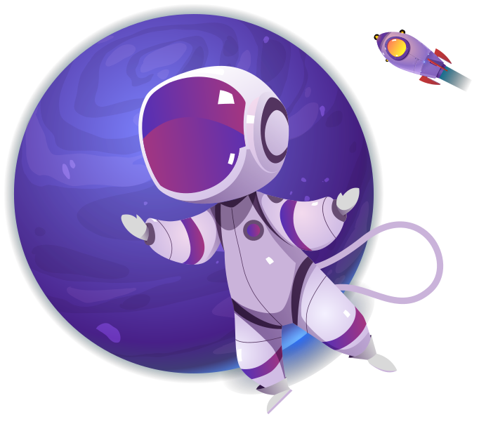
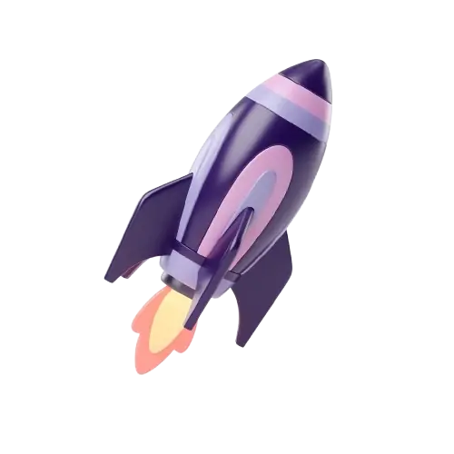
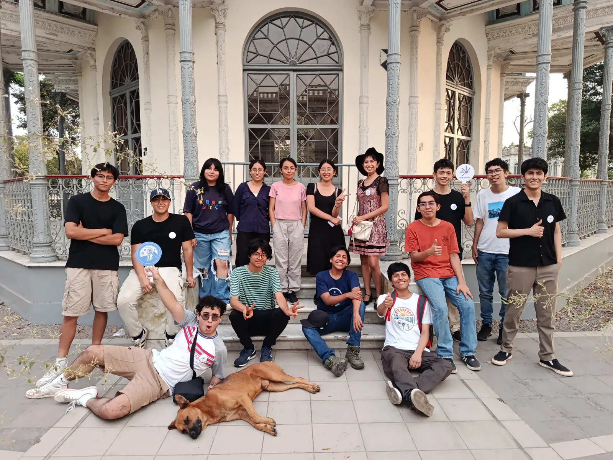
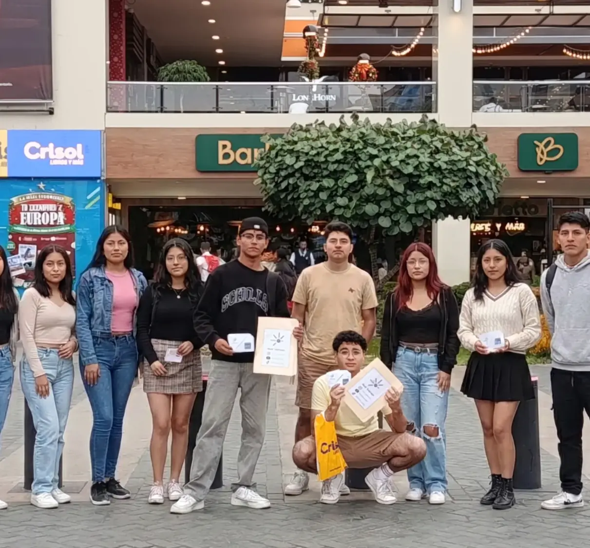
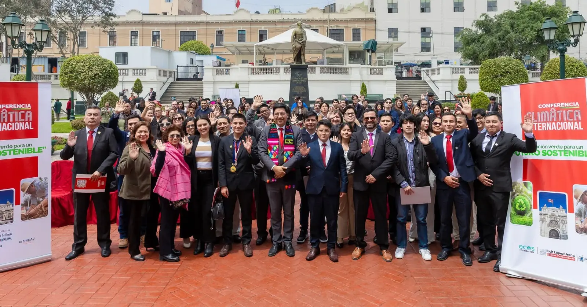

MISIÓN
Impulsar una educación integral basada en la practicidad del mundo real que forme jóvenes conscientes, críticos y capaces de transformar su realidad.
Nacida el 1 de julio del 2025, la Red Astrum agrupa ONGs, agrupaciones estudiantiles y docentes para demostrar que la educación no tiene límites.

Impulsar una educación integral basada en la practicidad del mundo real que forme jóvenes conscientes, críticos y capaces de transformar su realidad.
Construir en Latinoamérica una educación fuera de lo convencional, donde los jóvenes desarrollen su mente, su propósito y su capacidad de cambiar el mundo.

Nos distinguimos por un liderazgo altruista y basado en el servicio. Desde esta visión desarrollamos nuestras iniciativas y formamos a estudiantes y docentes comprometidos con una educación más humana.



La Red Astrum opera principalmente a través de sus organizaciones juveniles, las cuales impulsan iniciativas educativas, sociales y de liderazgo. A continuación, se presentan las organizaciones que conforman esta red y que trabajan conjuntamente para generar impacto en la formación de jóvenes.
Astropedia reúne las herramientas, servicios, contactos y oportunidades de las organizaciones afiliadas a Red Astrum en un portal privado y seguro.
Ingresar a AstropediaElige un monto y paga de forma segura con Mercado Pago.